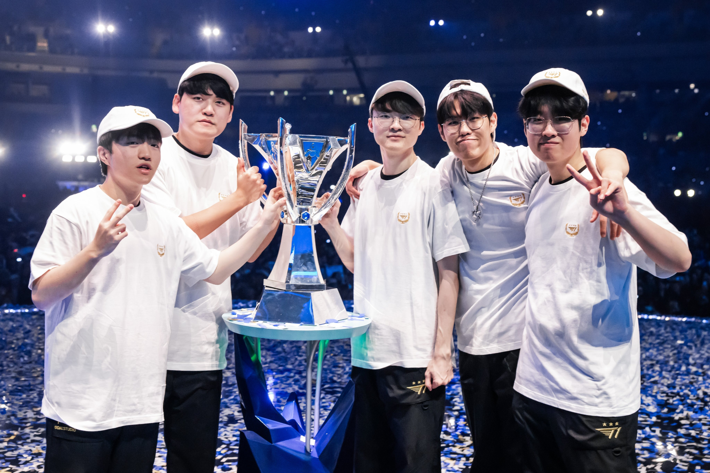

T1 vừa hủy diệt Weibo Gaming với tỷ số 3-0 trong trận chung kết CKTG 2023 để trở thành nhà vua mới của Liên
Minh
Huyền Thoại. Đây cũng là chức vô địch thế giới thứ 4 trong sự nghiệp của Faker.

Bước vào ván 1, WBG hướng tới đội hình có khả năng giao tranh dài hơi với Aatrox, Maokai, Jayce cùng bộ đôi
Senna - Tahm Kench ở đường dưới. Chiều ngược lại, Zeus mang tới lựa chọn Yone, kết hợp cùng Lee Sin - Ahri
và bộ đôi Kalista, Renata Glassc cho đường dưới.
Điểm Chiến công đầu sớm dành cho Xiaohu khi hạ gục Faker ở đường giữa vào phút thứ 4, nhờ tình huống vòng
sau của đi rừng Weiwei. WBG tiếp tục mang tới bất ngờ khi mang về thêm 1 điểm hạ gục từ Zeus ở đường trên.
Tưởng chừng như WBG sẽ có lợi thế để vươn lên dẫn trước, nhưng đây lại là những điểm sáng duy nhất của
Xiaohu và đồng đội trong suốt ván 1.
Mặc dù bị dẫn về điểm hạ gục, nhưng T1 vẫn cho thấy khả năng marco vượt trội so với WBG, qua đó nắm giữ thế
trận. Trong giao tranh ở cửa hang rồng phút 18, Zeus với vị tướng Yone đã tung ra chiêu cuối đẹp mắt, giữ
chân 2 chủ lực WBG. Kết quả, T1 mang về 3 điểm hạ gục, chính thức vươn lên dẫn trước với khoảng cách 3.000
tiền.
Thừa thắng xông lên, Faker và đồng đội thăng tiến sức mạnh, giành chiến thắng trong mọi giao tranh. Và với
bùa lợi Baron trên người, T1 không gặp nhiều khó khăn để phá hủy nhà chính của WBG và vươn lên dẫn 1-0.
Mọi tâm điểm trong ván 2 được dồn lên khu vực đường trên, nơi có kèo đấu Aatrox của TheShy đối đầu Gwen trong
tay Zeus. Tại đây, tuyển thủ 2004 của T1 đã chứng minh bản lĩnh vượt trội dù có ít kinh nghiệm hơn so với
TheShy, khi nhanh chóng mang về điểm Chiến công đầu ở phút thứ 7. Bên cạnh kỹ năng cá nhân ấn tượng, Zeus còn
cho thấy nhãn quan chiến thuật cùng khả năng di chuyển và chọn vị trí xuất sắc.
Sở hữu đường trên quá áp đảo, thế trận nghiêng hoàn toàn về phía T1. Khi Zeus ngày càng áp đảo với Gwen, thì
TheShy càng chơi càng tỏ ra lúng túng với Aatrox. Bên cạnh đó, Oner cùng Zeus phối hợp nhuần nhuyễn, qua đó “hủy
diệt” toàn bộ đội hình WBG. Theo đó, T1 nhanh chóng kết liễu WBG sau 30 phút, nâng tỷ số lên 2-0.
Trong ván đấu quyết định, đường trên tiếp tục là tâm điểm của sự chú ý khi Kennen bất ngờ xuất hiện trong tay
TheShy. Ngược lại, đường giữa của T1 cũng khiến khán giả bất ngờ với sự lựa chọn Akali trong tay Faker. Trong
giai đoạn đi đường, Crisp liên tục xử lý kỹ năng cá nhân tốt, qua đó giúp WBG phần nào áp đảo T1.
Tuy nhiên, thế trận này chỉ duy trì được trong 10 phút, trước khi Keria, Faker và Zeus phối hợp hoàn hảo, giành
chiến thắng trong giao tranh và mang về 3 điểm hạ gục quan trọng. Sự giằng co được kéo dài tới phút 18, khi kỹ
năng cá nhân của “Quỷ vương” lên tiếng với vị tướng Akali, mang về triple kill ấn tượng. Nhờ đó, T1 hạ gục tới 4
thành viên WBG và vươn lên nắm quyền kiểm soát thế trận.
Kể từ đây, mọi nỗ lực của WBG đều tan biến. Faker và đồng đội dẫn 10.000 tiền, có bùa lợi và lần lượt phá hủy
dàn trụ của WBG. Phút 25, T1 lấy 4/5 điểm hạ gục của WBG trong giao tranh cuối cùng, ấn định tỷ số 3-0 và bước
lên ngôi vô địch thế giới lần thứ 4 trong lịch sử.
CKTG 2023 là chức vô địch thế giới thứ 4 trong sự nghiệp của Faker